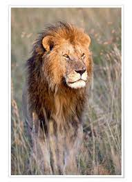

Wildlife
Die Tiere der WildnissDer Löwe (Panthera leo, veraltet/poetisch/mundartlich Leu) ist mit dem Tiger die größte Art aus der Familie der Katzen. Er ist heute nur noch in Teilen Afrikas südlich der Sahara sowie im indischen Bundesstaat Gujarat beheimatet; in Afrika ist er das größte Landraubtier. Charakteristisches Merkmal erwachsener Männchen ist eine Mähne. Löwen leben im Unterschied zu anderen Katzen in Rudeln.
Fun Fact: Die Raubkatzen schlafen bis zu 20 Stunden am Tag. Möglich macht das ihre Ernährung: Die Fleischfresser nehmen verhältnismäßig viele Kalorien auf einmal auf.

Während der letzten Eiszeiten hatten Löwen (die je nach systematischer Einordnung verschiedene Arten repräsentierten oder als Unterarten nur einer Art eingestuft werden) ein großes Verbreitungsgebiet.
Es reichte in der letzten Kaltzeit von Peru über Alaska, wo der Amerikanische Löwe vorkam, erstreckte sich über Sibirien und weite Teile Nordasiens und Europas, wo der Höhlenlöwe vorkam, bis Indien, Arabien und Afrika im Süden. Einen Großteil dieses Verbreitungsgebietes büßten die Löwen allerdings schon am Ende des Eiszeitalters ein.
“Löwen brüllen vor allem bei Sonnenaufgang und in der Dämmerung und markieren damit ihr Revier. Das markerschütternde Gebrüll ist etwa acht Kilometer weit zu hören.”
- Typ: Säugetier
- Durschnittsalter: 12.5 Jahre
- Gewicht Masculin: max 190kg
- Gewicht Feminin: max 150kg
- Familie: Katzen
Löwen gehören zur Ordnung der Raubtiere und dort zur Familie der Katzen und zur Gattung der Großkatzen. Neben den Tigern sind sie die größten Raubkatzen der Erde: Sie werden bis zu 180 Zentimeter lang, der Schwanz misst zusätzlich 70 bis 100 Zentimeter, die Schulterhöhe beträgt 75 bis 110 Zentimeter und sie wiegen zwischen 120 und 250 Kilogramm.